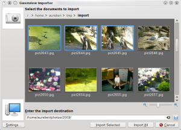
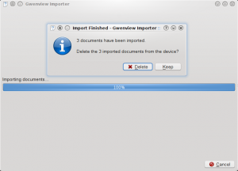
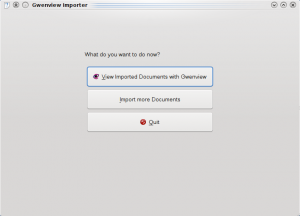
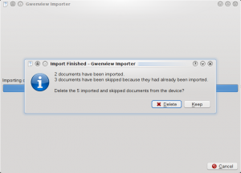
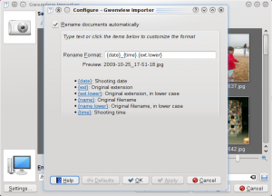

I have been quite quiet on Gwenview front lately, getting a job which does not involve two hours in a train everyday and becoming a father for the second time apparently does not help to find free time to hack (how surprising!)
Still I managed to get some work done on the start page and fixed a few bugs here and there. The main improvement though is the implementation of an importer for Gwenview, based on some previous experiment.
Its aim is to require as little manipulation as possible to get your pictures and video imported from your camera. It integrates with Solid so starting the import is just a matter of plugging in your camera/inserting your memory card, and selecting "Download Photos with Gwenview" from the popup which opens. You are then presented with a thumbnail view like the following, where you can select the documents to import as well as the import destination (destination is remembered across imports and defaults to ~/Pictures or whatever xdg defines):
Clicking "Import Selected" or "Import All" imports the documents to your destination folder. When it is done, the import asks you what to do with the documents on the device.
Once you clicked either "Delete" or "Keep", you get this final page:
Whenever possible, the importer tries to be smart. For example it automatically goes inside folders as long as they are alone in the hierarchy, so if your pictures are all in /DCIM/FOOBAR/, it will go into this folder directly instead of showing you a single DCIM folder, then a FOOBAR folder. On the other hand, it won't scan the whole device recursively, which could be quite painful if you just plugged a large external hard drive...
Another example is handling of already imported documents. Gwenview Importer will tell you if it skipped documents which have already been imported or if it renamed documents to avoid overwriting existing ones. For example if I select "Keep" in the "Delete or Keep" dialog and in a next import select the 3 imported documents as well as 2 new documents, I get this message (The wording can probably be improved, please send suggestions...):
Yet another point where the importer tries to be smart is on the name of the imported documents. Nothing is less useful than a series of pictures named PICT0001.JPG, PICT0002.JPG... so by default Gwenview Importer renames your pictures using the shooting date. This can be configured by clicking on the "Settings" button from the thumbnail page, which brings this configuration dialog:
I spent quite some time working on this formating thing. I tried to make it easy to customize the rename format by:
That's all for now. Tell me what you think of this.
{kind=link}
{kind=link}
{kind=link}
{kind=link}
{kind=link}